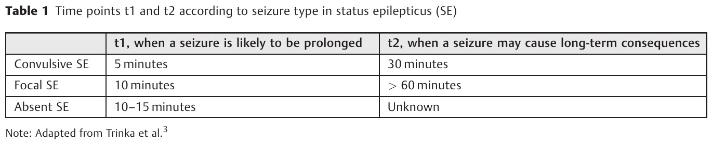

Tempos operacionais · definição tradicional vs operacional · T1=5 · T2=30
1. O foco: tônico-clônica generalizada
O cenário mais comum e mais estudado que leva a status é a crise tônico-clônica generalizada (TCG).
2. Tempo 1 = 5 minutos — parada espontânea
Essa crise tem dois tempos. Tempo 1 = 5 minutos: tempo da parada espontânea. Na imensa maioria das vezes, as crises param até 5 minutos.
Se a crise passar de 5 minutos, a chance de cessação espontânea cai muito — torna-se difícil parar sem intervenção.
3. Tempo 2 = 30 minutos — lesão neuronal
Tempo 2 = 30 minutos: tempo da lesão cerebral / lesão neuronal. A partir de 30 minutos de crise, estatisticamente, o cérebro começa a ser "machucado".
4. Lógica operacional
Até 5 min não se intervém na crise (espera parar sozinha). A partir de 5 min atua-se para não cruzar 30 min.
O tempo 5 determina se se atua; o tempo 30 é o da lesão. Atuar depois de 30? Não — atuar depois de 5. Agir só aos 30 min é dar muita chance ao azar.
5. Tradicional vs operacional
0–5′ESPERA para sozinha
5–30′AGE atuar p/ não cruzar 30
≥30′LESÃO risco neuronal
📜 Tradicional
Estado de mal = crise com mais de 30 minutos.
⚡ Operacional
Crise > 5 minutosou≥ 2 crises sem recuperação da consciência entre elas = status a tratar.
Qualquer momento em que se atua com medicamento, por definição, é status epiléptico. Só se a crise tiver menos de 5 minutos (e não se atue) é que não se chama de status no raciocínio operacional. O tradicional (≥ 30 min) permanece verdadeiro como marco histórico/clássico; o que se marca e opera é o operacional.
5 age · 30 lesa

Tempos operacionais t1/t2 no SE (linha TCG: 5 min / 30 min). Caboclo 2025 · Arq. Neuro-Psiquiatr. · CC BY 4.0 · PMC11813736 · (adaptado de Trinka/ILAE 2015). t1=5 · t2=30
⚡ Pegadinha de prova
Banca que pergunta "quando tratar" quer 5, não 30. Trinta é lesão, não "hora de começar a se preocupar".
Por que importa
Agir só aos 30 min é entrar na zona de lesão; a prova cobra atuar depois de 5.
📌 Resumo operacional
5 = se atua · 30 = lesão. Operacional: >5 min ou ≥2 crises sem recuperação = status a tratar. Atuar com fármaco, por definição, é status.
🧠 Quiz
Q1. Em TCG, o marco que determina atuar com medicamento (definição operacional) é:
Q2. Crise de 3 min que cessa sozinha, sem fármaco. No raciocínio operacional: